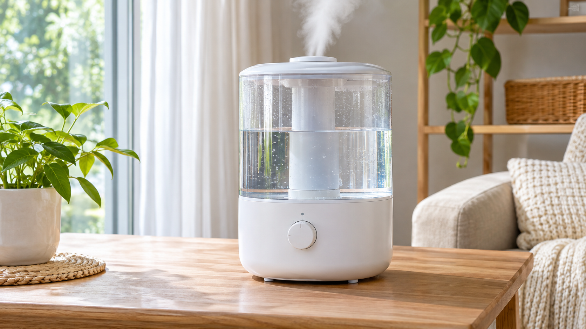

가습기 소음이 갑자기 커졌다면 먼저 전원을 끄고 물통 체결, 수위, 평평한 설치면을 확인하세요. 갈리는 소리·타는 냄새·누수가 함께 나타나면 더 작동시키지 말고 점검을 받아야 합니다.
| 소리 | 먼저 확인 |
|---|---|
| 달달 떨림 | 물통·뚜껑 체결, 바닥 수평 |
| 웅 하는 소리 | 흡입구 먼지, 팬 작동 |
| 물 흐르는 소리 | 일정한 급수라면 정상 가능 |
| 긁히는 소리 | 즉시 중단, 내부 부품 점검 |
운전 중 본체를 기울이거나, 통풍구에 물을 붓거나, 내부 팬을 도구로 건드리지 마세요.
빈 물통에서도 소음이 지속되거나 모터가 멈추고 재시작하거나 냄새·누수가 동반되면 모델명과 소리 영상을 준비해 점검받으세요. 가습기 물샘 점검법과 미스트 불량 해결법도 참고하세요.
정상 작동음과 세척 범위는 제품별 제조사 사용설명서를 우선 확인하세요.